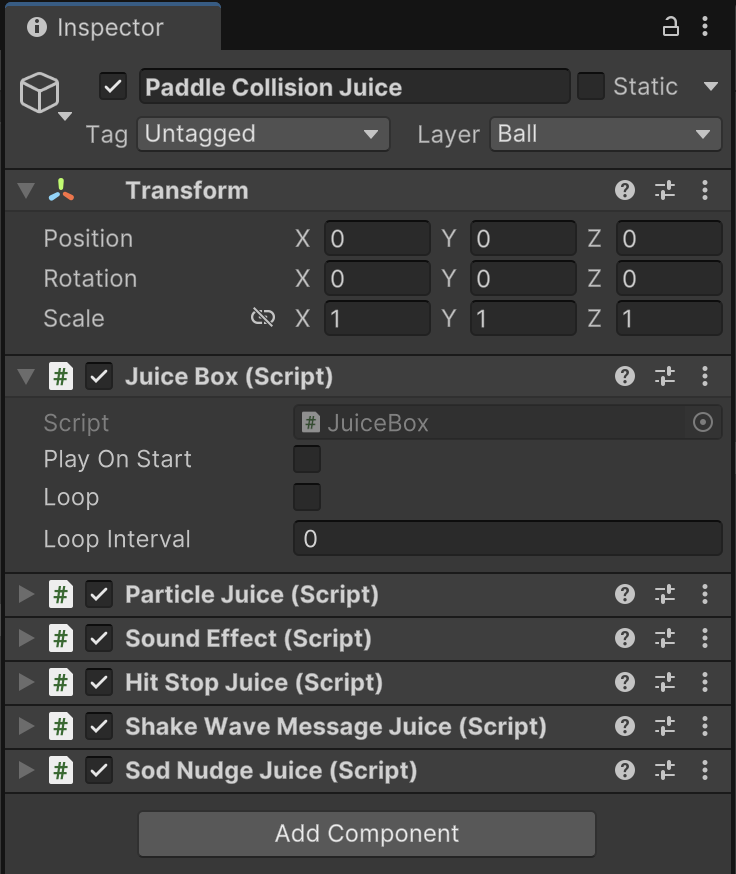

Juice Box
I love juice/game feel/feedback/tactility or whatever your favorite word for it is. It’s so much fun to make that I can easily get carried away creating the perfect sensation for every action in my games. Game feel is not just bonus, it's crucial and working on it is never a waste of time. Juice Box is a C# library I wrote to do exactly that.
What is Juice Box?
This is a mini-library for adding juicy effects to 2D and 3D games that I wrote in September 2024, and have used in every single one of my projects since. I wrote it to be as flexible and customizable as possible without being needlessly complex or hard to learn. Some of my classmates have even used it in their own projects!
This was the prototype I used to test the first iteration of JuiceBox
Why Bother?
There are plenty of great pre-made assets that handle this for you (my favorite is Feel and JuiceBox was heavily inspired by it), so why go to the trouble of making my own?
I really really care about game feel, and I felt like I shouldn't be using someone else's code for something I love so much. Doing all of this work myself would also push me to develop my own style of gamefeel and force me to put extra thought into what makes good camera shake, hit stop, springiness, etc. so I could support it with my little library.
Design Process
I had in mind some priorities for my new game feel tool:
- Extensible: creating new effects should be easy and fast, with minimal boilerplate.
- Portable: useful for any Unity project in any genre, 2D or 3D. I wanted to use this in all my games going forward.
- Uncomplicated: I was okay sacrificing some customizability if it meant less setup time for each effect and less confusion when using the system.
To start, I imagined my ideal workflow for adding juice to an in-game action like a jump, collision, or item pickup, for example. The workflow goes like this:
- Create a “container” that holds all the effects for a certain action
- Add a bunch of effects to the container, e.g. sound effects, particles, squash/stretch, etc.
- Reference the container in another script and call a Play() function that would trigger all of its effects.
I figured the simplest, easiest-to-understand way of doing this was to build it right on top of Unity’s GameObject and Component structure. Each “container” would just be its own GameObject, and all the effects would be Components attached to it. To play the effects, you just needed a reference to the container GameObject. Here’s the workflow in action:
This game object contains a bunch of effects (Particles, Sound, Hitstop, etc) and a Juice Box, which finds and plays all these effects.
What I Learned
Writing Juice Box taught me the value of flexible, extensible, reusable code in a way I had never understood before. It’s been so easy to integrate into my projects and I thank my past self for writing it every time I use it.
It also made me think about my workflow in a new way. After writing Juice Box, I’ve started thinking about ways I can code up tools that lead to better workflows. Writing good tools has made me a faster, more flexible designer, and allows me to get experimental without investing a ton of additional time.